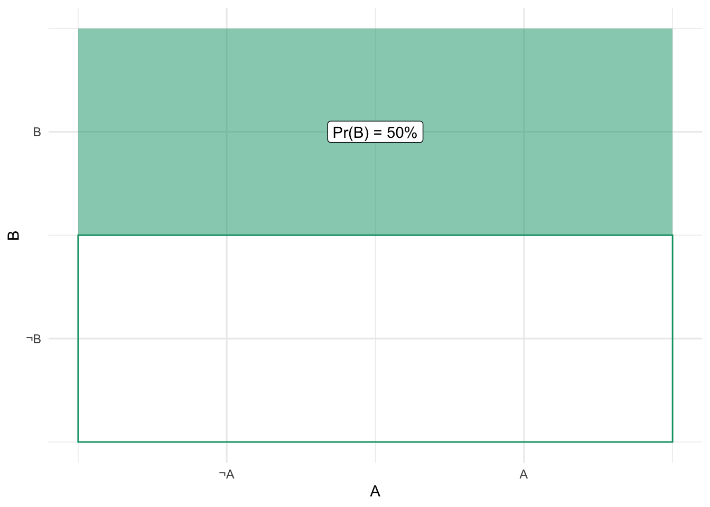
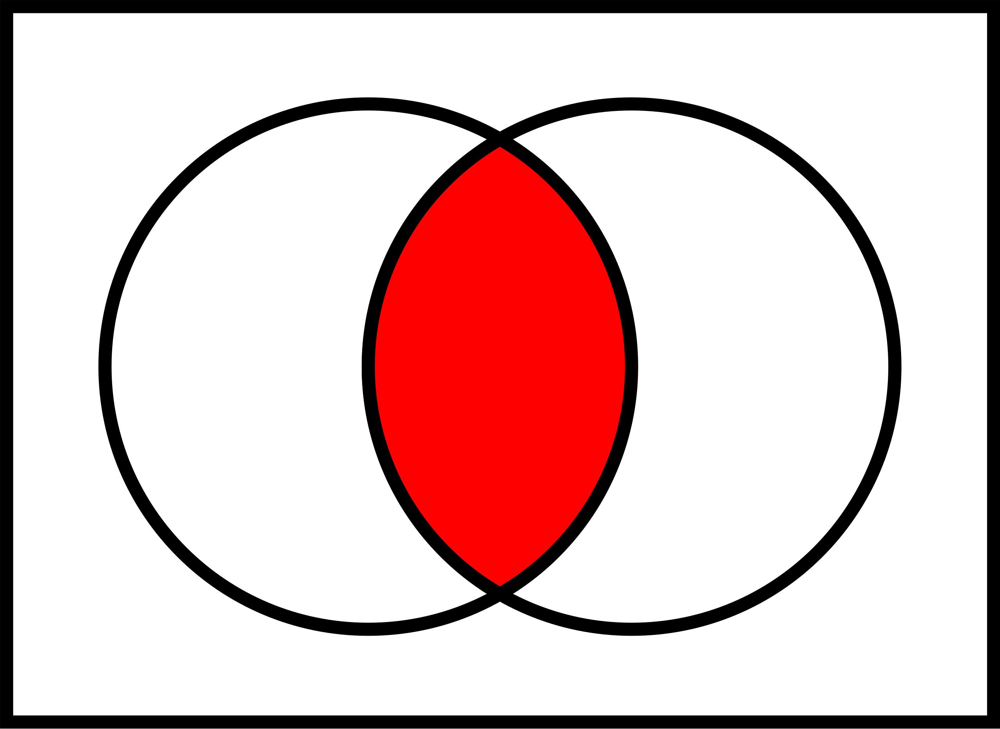
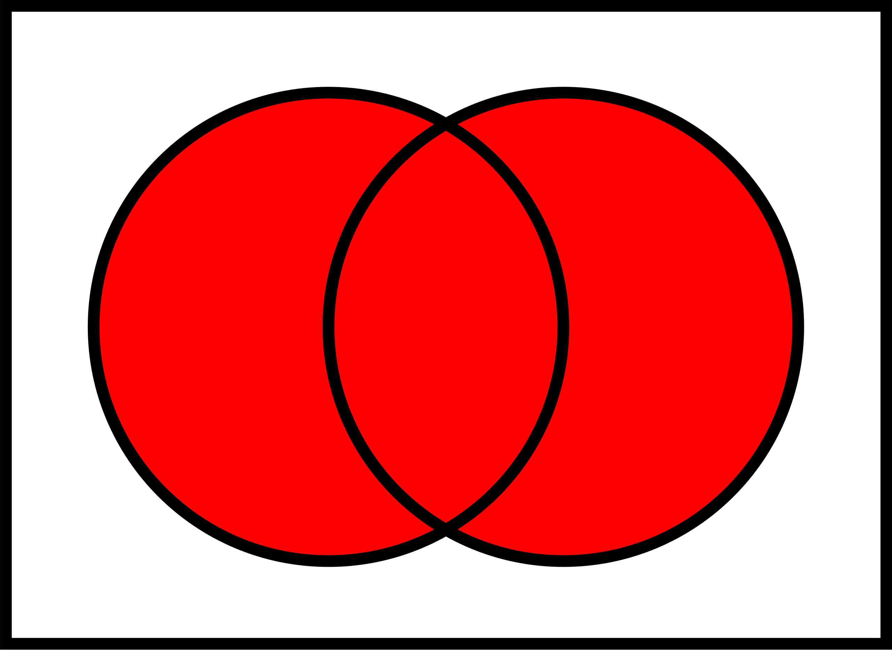
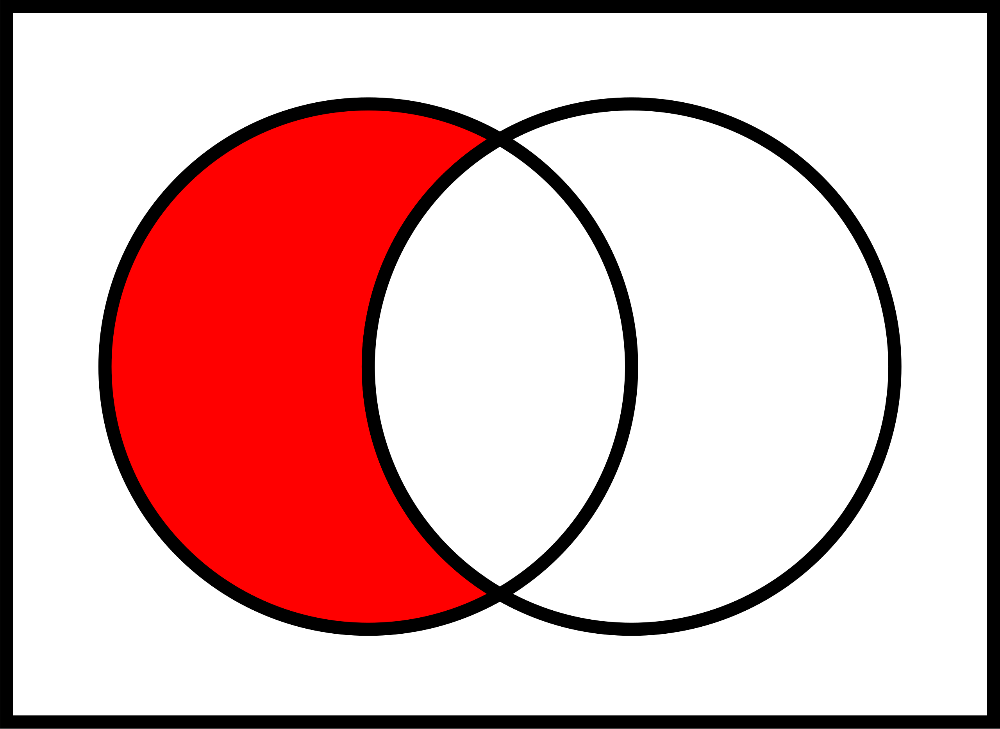
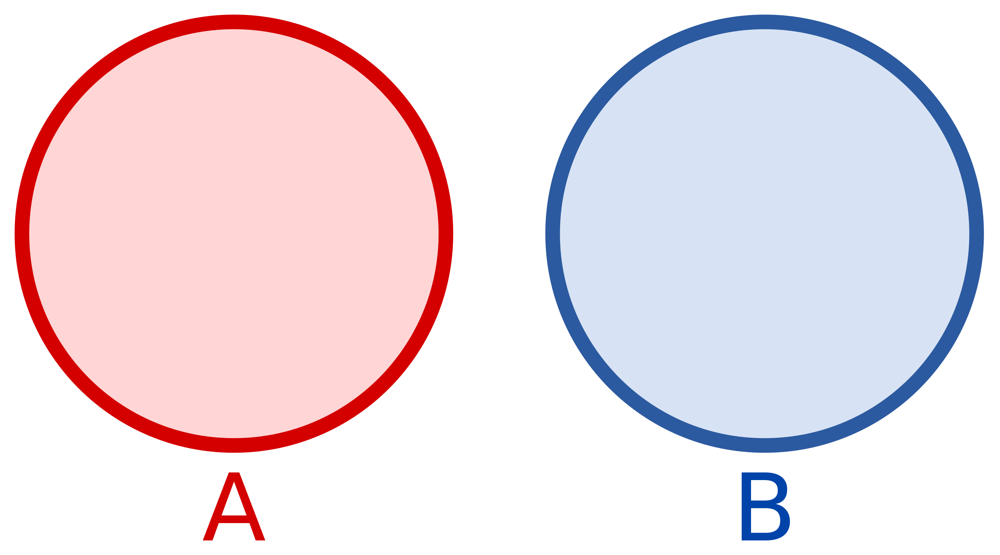
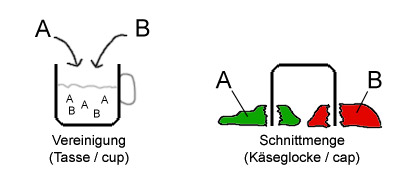
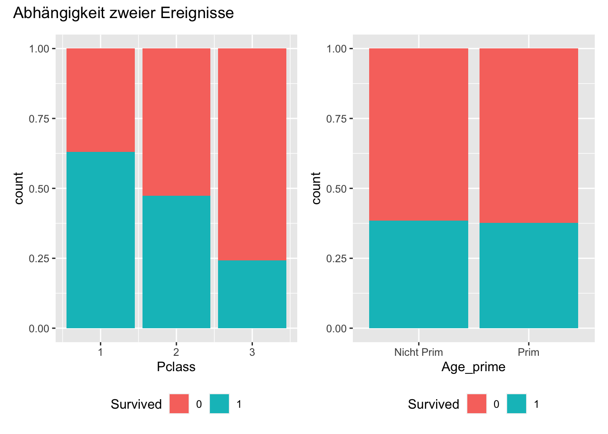
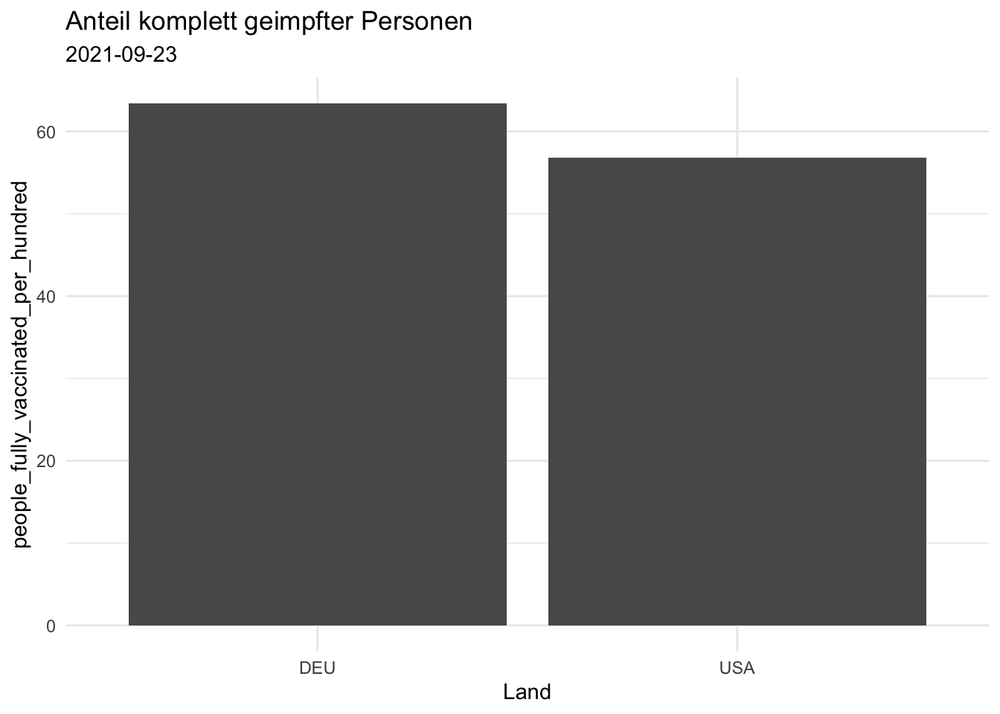
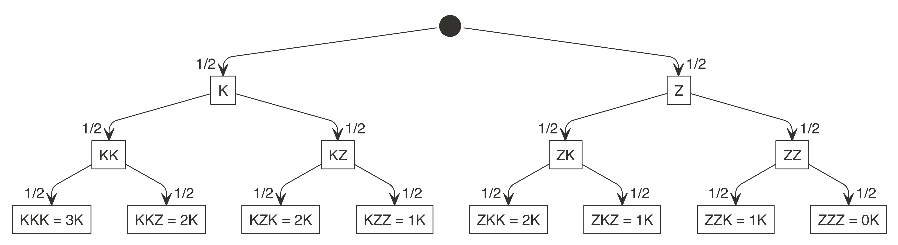
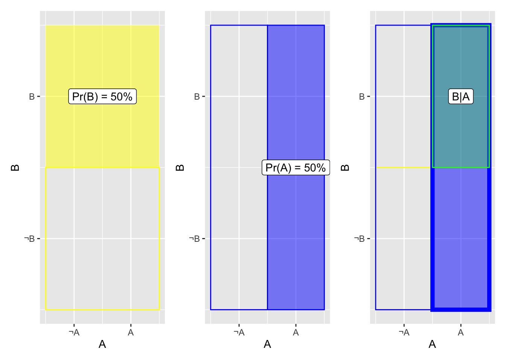

4 Wahrscheinlichkeit
4.1 Lernsteuerung
4.1.1 Lernziele
Nach Absolvieren des jeweiligen Kapitels sollen folgende Lernziele erreicht sein.
Sie können …
- die Grundbegriffe der Wahrscheinlichkeitsrechnung erläuternd definieren
- die drei Arten der direkten Ermittlung von Wahrscheinlichkeit erläutern
- typische Relationen (Operationen) von Ereignissen anhand von Beispielen veranschaulichen
- mit Wahrscheinlichkeiten rechnen
4.1.2 Eigenstudium
Hinweis
Dieses Kapitel ist selbständig im Eigenstudium vorzubereiten vor dem Unterricht. Lesen Sie dazu die angegebene Literatur.\(\square\)
4.1.3 Prüfungsrelevanter Stoff
Lesen Sie dazu Bourier (2018), Kap. 2-4. Weitere Übungsaufgaben finden Sie im dazugehörigen Übungsbuch, Bourier (2022).
4.1.4 Zentrale Begriffe
4.1.4.1 Grundbegriffe
- Zufallsvorgang (Zufallsexperiment)
- Elementarereignis
- Ereignisraum
- Zufallsereignis (zufälliges Ereignis)
- Sicheres Ereignis
- Unmögliches Ereignis
4.1.4.2 Wahrscheinlichkeitsbegriffe
- Klassische Wahrscheinlichkeit (LaPlace’sche Wahrscheinlichkeit)
- Statistische (empirische) Wahrscheinlichkeitsermittlung
- Subjektive (Bayes) Wahrscheinlichkeitsermittlung
4.1.4.3 Wahrscheinlichkeitsrelationen
- Vereinigung von Ereignissen
- Schnitt(menge) von Ereignissen
- Komplementärereignis
- Vollständiges Ereignissystem
- Kolmogorovs Definition von Wahrscheinlichkeit
4.1.4.4 Wahrscheinlichkeitsrechnung
- Allgemeiner Additionsssatz
- Disjunkte Ereignisse
- Additionssatz für disjunkte Ereignisse
- Bedingte Wahrscheinlichkeit
- (Stochastische) Unabhängigkeit
- Baumdiagramm für gemeinsame Wahrscheinlichkeit
- Allgemeiner Multiplikationssatz
- Multiplikationssatz für unabhängige Ereignisse
- Totale Wahrscheinlichkeit
- Satz von Bayes
4.1.5 Begleitvideos
4.2 Unterstützung: Wahrscheinlichkeit in Bildern
Wahrscheinlichkeit in Bildern: zur einfachen Erschließung des Materials, ein Unterstützungsangebot.
Im Folgenden sind einige Schlüsselbegriffe und -regeln in (ver-)einfach(t)er Form schematisch bzw. visuell dargestellt mit dem Ziel, den Stoff einfacher zu erschließen.
4.2.1 Zufall
Werfen Sie eine Münze!
Diese hier zum Beispiel:
Quelle: By OpenClipartVectors, CC0
Wiederholen Sie den Versuch 10, nein, 100, nein 1000, nein: \(10^6\) Mal.
Notieren Sie das Ergebnis!
Oder probieren Sie die App der Brown University.
4.2.2 Relationen von Mengen
Venn-Diagramme eigenen sich, um typische Operationen (Relationen) auf Mengen zu visualisieren.
4.2.2.1 Überblick
Die folgenden Diagramme stammen von Wikipedia (En).
Wir gehen von Ereignisraum \(\Omega\) aus, mit dem Ereignis \(A\) als Teilmenge: \(A \subset B\).




4.2.2.2 Disjunkte Ereignisse
(Engl. disjoint events)
\(A= \{1,2,3\}; B= \{4,5,6\}\)
\(A\) und \(B\) sind disjunkt: ihre Schnittmenge ist leer: \(A \cap B = \emptyset\), s. Abbildung 4.2

4.2.2.3 Eselsbrücke zur Vereinigungs- und Schnittmenge
Das Zeichen für eine Vereinigung zweier Mengen kann man leicht mit dem Zeichen für einen Schnitt zweier Mengen leicht verwechseln; daher kommt eine Eselbrücke gelesen, s. Abbildung 4.3.

4.2.2.4 Animationen
Animation zu Mengenoperationen
4.2.3 Additionssatz
Der Additionssatz wird verwendet, wenn wir an der Wahrscheinlichkeit interessiert sind, dass mindestens eines der Ereignisse eintritt.
4.2.3.1 Diskunkte Ereignisse
\(\Omega = {1,2,3,4,5,6}\)
\(\boxed{1\; 2\; 3\; 4\; 5\; 6}\)
Gesucht sei die Wahrscheinlichkeit des Ereignis \(A=\{1,2\}\).
\(\boxed{\boxed{1\; 2}\; \color{gray}{ 3\; 4\; 5\; 6}}\)
\(P(1 \cup 2) = \frac{1}{6} + \frac{1}{6} = \frac{2}{6}\)
4.2.3.2 Allgemein (disjunkt oder nicht disjunkt)
Bei der Addition der Wahrscheinlichkeiten für \(A\) und \(B\) wird der Schnitt \(A\cap B\) doppelt erfasst. Er muss daher noch abgezogen werden (vgl. Abbildung 4.4):
\[P(A \cup B) = P(A) + P(B) - P(A\cap B)\]
4.2.4 Bedingte Wahrscheinlichkeit
4.2.4.1 Animation
Schauen Sie sich mal diese Wahnsinnsanimation von Victor Powell an. Hammer!
4.2.4.2 Schema
Abb. Abbildung 4.5 illustriert gemeinsame Wahrscheinlichkeit, $P(A B) und bedingte Wahrscheinlichkeit, \(P(A|B)\).
Bedingte Wahrscheinlichkeit ist vergleichbar zu Filtern einer Tabelle:
d <-
tibble::tribble(
~id, ~A, ~B,
"1", 0L, 0L,
"2", 0L, 1L,
"3", 1L, 0L,
"4", 1L, 1L,
"SUMME", 2L, 2L
)Es ergeben sich folgende Wahrscheinlichkeiten:
\(P(A) = 2/4\)
\(P(B) = 2/4\)
\(P(A \cap B) = 1/4\)
\(P(A|B) = 1/2\)
4.2.5 (Un-)Abhängigkeit
Stochastische Unabhängigkeit ist ein Spezialfall von Abhängigkeit: Es gibt sehr viele Ausprägungen für Abhängigkeit, aber nur eine für Unabhängigkeit. Können wir Unabhängigkeit nachweisen, haben wir also eine starke Aussage getätigt.
Abhängig, s. Abbildung 4.6, links: Überleben auf der Titanic ist offenbar abhängig von der Passagierklasse. Auf der anderen Seite: Das Ereignis Überleben auf der Titanic ist unabhängig vom Ereignis Alter ist eine Primzahl, s. Abbildung 4.6, rechts.

Zur Ab- bzw. Un-Abhängigkeit zweier Variablen, an Beispielen illustriert.
Beispiel 4.1 (Zusammenhang von Covidsterblichkeit und Impfquote) Sind die Ereignisse Tod durch Covid bzw. Impfquote (\(A\)) und Land1 (\(B\)) voneinander abhängig (Abb. Abbildung 4.7)?

Ja, da in beiden Diagrammen gilt: \(P(A|B) \ne Pr(A) \ne Pr(A|\neg B)\).
Daten von Our World in Data.
4.2.6 Multiplikationssatz
Der Multiplikationssatz wird verwendet, wenn wir an der Wahrscheinlichkeit interessiert sind, dass alle Ereignisse eintreten.
4.2.6.1 Unabhängige Ereignisse
Wir werfen eine faire Münze zwei Mal (Abb. Abbildung 4.8).

Abb. Abbildung 4.8 zeigt ein Baumdiagramm. Jeder Kasten (Knoten) zeigt ein Ergebnis. Die Pfeile (Kanten) symbolisieren die Abfolge des Experiments: Vom “Start” (schwarzer Kreis) führen zwei mögliche Ergebniss ab, jeweils mit Wahrscheinlichkeit 1/2. Die untersten Knoten nennt man auch Blätter (Endknoten), sie zeigen das Endresultat des (in diesem Fall) zweifachen Münzwurfs. Der Weg vom Start zu einem bestimmten Blatt nennt man Pfad. Die Anzahl der Pfade entspricht der Anzahl der Blätter. In diesen Diagramm gibt es vier Pfade (und Blätter).
| Ereignis | Pr |
|---|---|
| 0K | 1/2 * 1/2 = 1/4 |
| 1K | 1/4 + 1/4 = 1/2 |
| 2K | 1/2 * 1/2 = 1/4 |
Wir werfen eine faire Münze drei Mal (Abb. Abbildung 4.9)

| Ereignis | Pr |
|---|---|
| 0K | 1/2 * 1/2 * 1/2 = 1/8 |
| 1K | 1/8 + 1/8 + 1/8 = 3/8 |
| 2K | 3 * 1/8 = 3/8 |
| 3K | 1/2 * 1/2 * 1/2 = 1/8 |
\(Pr(AB) = Pr(A) \cdot Pr(B) = 50\% \cdot 50\% = 25\%\)

Abb. Abbildung 4.10 zeigt, dass gilt: \(P(A\cap B) = P(A) \cdot P(B) = P(B) \cdot P(A)\).
4.2.6.2 Kalt und Regen
Von McElreath (2020) stammt diese Verdeutlichung der gmeinsamen Wahrscheinlichkeit:
Was ist die Wahrscheinlichkeit für kalt ❄ und Regen ⛈️?
Die Wahrscheinlichkeit für kalt und Regen ist die Wahrscheinlichkeit von Regen ⛈, wenn’s kalt ❄ ist mal die Wahrscheinlichkeit von Kälte ❄.
Ebenfalls gilt:
Die Wahrscheinlichkeit für kalt und Regen ist die Wahrscheinlichkeit von Kälte ❄, wenn’s regnet ⛈️ mal die Wahrscheinlichkeit von Regen ⛈️.
Das Gesagte als Emoji-Gleichung:
\(P(❄️ und ⛈️) = P(⛈️ |❄️ ) \cdot P(❄️) = P(❄️ |⛈️ ) \cdot P(⛈️) = P(⛈️ und ❄️)\)
Allgemein:
\(P(A\cap B) = P(A) \cdot P(B|A) = P(B) \cdot P(A|B)\)
Man kann also die “Gleichung drehen”.
4.2.6.3 Abhängige Ereignisse
Ein Baumdiagramm bietet sich zur Visualisierung abhängiger Ereignisse an, s. Abb. Abbildung 4.11. Für unabhängige Ereignisse übrigens auch.
In einer Urne befinden sich fünf Kugeln, von denen vier rot sind und eine blau ist.
wie groß ist die Wahrscheinlichkeit, dass bei zwei Ziehungen ohne Zurücklegen (ZOZ) zwei rote Kugeln gezogen werden (Bourier 2018), S. 47.
Hier ist unsere Urne:
\[\boxed{\color{red}{R, R, R, R}, \color{blue}B}\]
Und jetzt ziehen wir. Hier ist das Baumdiagramm, s. Abb. Abbildung 4.11.
flowchart LR A[Start] -->|4/5|B[1. Zug: R] A -->|1/5|C[1. Zug: B] B -->|3/4|D[2. Zug: R] B -->|1/4|E[2. Zug: B] D --- H[Fazit: RR: 12/20] E --- I[Fazit: RB: 4/20] C -->|4/4|F[2. Zug: R] C -->|0/4|G[2. Zug: B] F --- J[Fazit: BR: 4/20] G --- K[Fazit: BB: 0/20]
Es gilt also: \(P(A\cap B) = P(A) \cdot P(B|A)\).
4.2.7 Totale Wahrscheinlichkeit
Abbildung 4.12 zeigt das Baumdiagramm für die Aufgabe Bourier (2018), S. 56.
flowchart LR A[Start] -->|0.6|B[A1] A -->|0.1|C[A2] A -->|0.3|D[A3] B -->|0.05|E[B] B -.->|0.95|F[Nicht-B] C -->|0.02|G[B] C -.->|0.98|H[Nicht-B] D -->|0.04|I[B] D -.->|0.96|J[Nicht-B]
Gesucht ist die Wahrscheinlichkeit \(P(B)\).
Dazu addieren wir die Warhscheinlichkeiten der relevanten Äste.
W_total <- 0.6 * 0.05 + 0.1 * 0.02 + 0.3 * 0.04
W_total
## [1] 0.044Die totale Wahrscheinlichkeit beträgt also \(P(B) = 4.4\%\).
Einfacher noch ist es, wenn man anstelle von Wahrscheinlichkeiten absolute Häufigkeiten verwendet.
4.2.8 Bayes
4.2.8.1 Bayes als Baum
Gesucht sei \(P(A_1|B)\).
Für Bayes’ Formel setzt man die Wahrscheinlichkeit des günstigen Ast zur Wahrscheinlichkeit aller relevanten Äste, \(P(B)\).
Der günstige Ast ist hier schwarz gedruckt, die übrigen Äste gestrichelt, s. Abbildung 4.13.
flowchart LR A[Start] -->|0.6|B[A1] A -.->|0.1|C[A2] A -.->|0.3|D[A3] B --->|0.05|E[B] B -.->|0.95|F[Nicht-B] C -.->|0.02|G[B] C -.->|0.98|H[Nicht-B] D -.->|0.04|I[B] D -.->|0.96|J[Nicht-B]
\[P(A|B) = \frac{P(A1 \cap B)}{P(B)} = \frac{0.6 \cdot 0.05}{0.03 + 0.002 + 0.012} = \frac{0.03}{0.044} \approx 0.68\]
\(P(A|B)\) beträgt also ca. 68%.
Zur Erinnerung: \(P(B)\) ist die totale Wahrscheinlichkeit.
4.3 Bayes’ Theorem
4.3.1 Bayes als bedingte Wahrscheinlichkeit
Bayes’ Theorem ist auch nur eine normale bedingte Wahrscheinlichkeit:
\(P(A|B) = \frac{\overbrace{ P(A\cap B)}^\text{umformen}}{P(B)}\)
\(P(A\cap B)\) kann man umformen, s. Gleichung 4.1:
\[P(A|B) =\frac{P(A\cap B)}{P(B)} = \frac{P(B|A) \cdot P(A)}{P(B)} \tag{4.1}\]
Man kann sich Bayes’ Theorem auch wie folgt herleiten:
\(P(A\cap B) = P(B \cap A) = P(A) \cdot P(B|A) = P(B) \cdot P(A|B)\)
Dann lösen wir nach P\((A|B)\) auf:
\(P(A|B) = \frac{P(A) \cdot P(B|A)}{P(B)}\)
4.3.2 Wozu wird Bayes in der Praxis genutzt?
In der Praxis nutzt man Bayes häufig, wenn man Daten zu einer Wirkung \(W\) hat, und auf die Ursache \(U\) zurückschließen möchte, sinngemäß:
\(W \quad \underrightarrow{Bayes} \quad U\).
Dann kann man Gleichung 4.1 so schreiben, s. Gleichung 4.2:
\[P(U|W) = \frac{ P(U) \cdot P(W|U) }{P(W)} \tag{4.2}\]
Eine ähnliche Situation, die in der Praxis häufig ist, dass man Daten \(D\) hat und auf die Wahrscheinlichkeit einer Hypothese \(H\) schließen möchte, s. Gleichung 4.3.
\(D \quad \underrightarrow{Bayes} \quad H\).
\[P(H|D) = \frac{ P(H) \cdot P(D|H) }{P(D)} \tag{4.3}\]
Gleichung 4.3 fragt nach \(P(H|D)\):
Was ist die Wahrscheinlichkeit der Hypothese H, jetzt wo wir die Daten haben (und ein Modell?)
Und antwortet so (Gleichung 4.3):
Diese Wahrscheinlichkeit entspricht der Grundrate (Apriori-Wahrscheinlichkeit) der Hypothese mal der Plausibilität (Likelihood) der Daten unter Annahme (gegeben) der Hypothese. Aus Standardisierungsgründen dividiert man noch die totale Wahrscheinlichkeit der Daten über alle Hypothesen.
4.3.3 Zusammengesetzte Hypothesen
Das ist vielleicht ein bisschen fancy, aber man kann Bayes’ Theorem auch nutzen, um die Wahrscheinlichkeit einer zusammengesetzten Hypothese zu berechnen: \(H = H_1 \cap H_2\). Ein Beispiel wäre: “Was ist die Wahrscheinlichkeit, dass es Regen (\(R\)) und Blitzeis (\(B\)) gibt, wenn es kalt (\(K\)) ist?”.
Das sieht dann so aus, Gleichung 4.4:
\[ \begin{aligned} P(R \cap B |K) &= \frac{ P(R \cap B) \cdot P(K|R \cap B) }{P(D)} \\ &= \frac{ P(R ) \cdot P(B) \cdot P(K|R \cap B) }{P(D)} \end{aligned} \tag{4.4}\]
Hier haben wir \(P(R \cap B)\) aufgelöst in \(P(R) \cdot P(B)\), das ist nur zulässig, wenn \(R\) und \(B\) unabhängig sind.
4.3.3.1 Bayes-Video von 3b1b
Das Video zu Bayes von 3b1b verdeutlicht das Vorgehen der Bayes-Methode auf einfache und anschauliche Weise.
4.4 Aufgaben
Zusätzlich zu den Aufgaben im Buch:
4.5 —
hier mit den zwei Ausprägungen DEU und USA↩︎